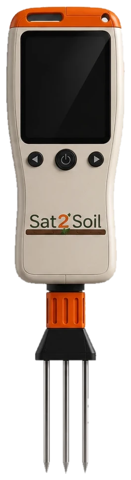

NASA Space Apps Challenge 2026 · Konya
Sat Soil
Soil
From Satellite to Soil,
From Data to Decisions.
A decision-support tool that turns open NASA Earth data into explainable crop-rotation and water choices for each field, with a handheld field device that adds what satellites cannot see.
Challenge: Field Shift: Adapting Farms with NASA Data
Team: Hermes Five
Members: Yunus Emre Atmaz · Ela Nur Göçel · Onur Bayram · Umut Talha Berberoğlu · Mehmet Ali Alkan
Live app: sat2-soil.vercel.app · Code: github.com/yunopo42/Sat2Soil

AI-generated render of our prototype · demo data simulated